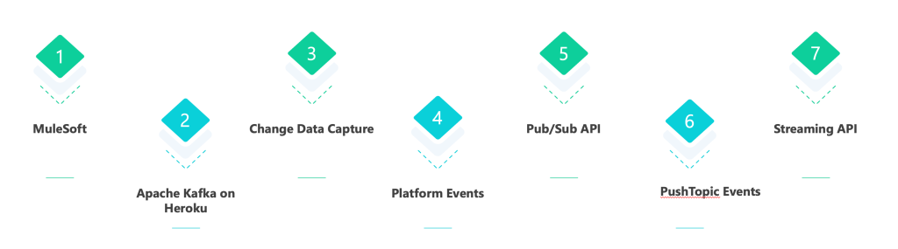
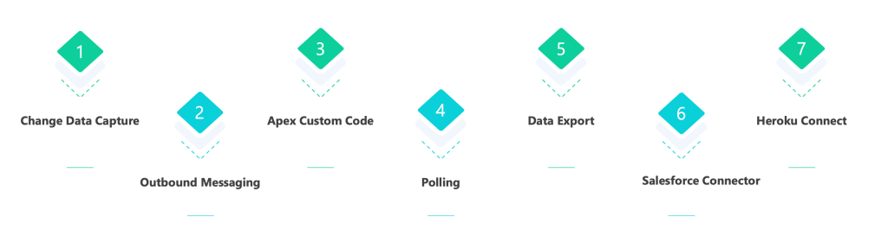
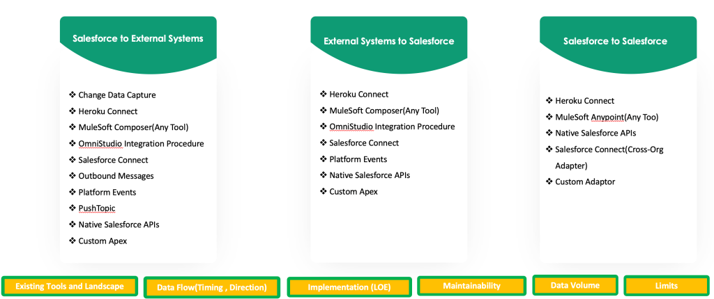

Integration Questions
What is webservices?
Web service is a standardized medium to propagate communication between the client and server applications on the World Wide Web.
Type of Web Service
There are mainly two types of web services.
- SOAP web services.
- RESTful web services
Difference between JSON Vs XML?
| JSON | XML |
| JavaScript Object Notation has a type like String, number, Object, Boolean | Extensible markup language is type less, and should be string |
| It is a way of representing objects | It is a markup language and uses tag structure to represent data items |
| Retrieving value is easy | Retrieving value is difficult |
| It does not provide any support for namespaces. | It supports namespaces. |
| It is less secured | It is more secure than JSON |
What is REST API?
A REST API is also known as RESTful API. REST API is an application programming interface (API) that conforms to the constraints of REST architectural style and allows for interaction with RESTful web services.
What is SOAP API?
- It uses a Web Services Description Language (WSDL) file to rigorously define the parameters for accessing data through the API.
- SOAP API supports XML only.
- Because SOAP API uses the WSDL file as a formal contract between the API and consumer, it’s great for writing server-to-server integrations.
What is the difference between SOAP and REST?
Here is the difference between SOAP and REST API.
| SOAP API | REST API |
| Relies on SOAP protocol | Relies on REST architecture using HTTP |
| Transports data in XML | Transports data in JSON or XML |
| Highly structured/ typed | Less structured? Less bulky data |
| Handles large data loads | Works well with JavaScript |
| Designed with large enterprise application in mind | Designed with mobile devices in mind |
What all Integration options are available in Salesforce?
| S.No | API Name | Protocol | Data Format | Communication |
| 1 | REST API | REST | JSON, XML | Synchronous |
| 2 | Apex REST API | REST | JSON, XML, Custom | Synchronous |
| 3 | SOAP API | SOAP (WSDL) | XML | Synchronous |
| 4 | Apex SOAP API | SOAP (WSDL) | XML | Synchronous |
| 5 | Chatter REST API | REST | JSON, XML | Synchronous (photos are processed asynchronously) |
| 6 | Analytics REST API | REST | JSON, XML | Synchronous |
| 7 | User Interface API | REST | JSON | Synchronous |
| 8 | Tooling API | REST or SOAP (WSDL) | JSON, XML, Custom | Synchronous |
| 9 | Bulk API | REST | CSV | Asynchronous |
| 10 | Metadata API | SOAP (WSDL) | XML | Asynchronous. Retrieve, deploy, and modify metadata |
| 11 | Streaming API | Bayeux | JSON | Asynchronous. Push notifications from Salesforce to subscribing applications/entities (replaces polling). |
What is WSDL?
WSDL (Web Services Description Language) is an XML document that describes a web service. There are two types of WSDL in Salesforce:
- Enterprise WSDL
- Partner WSDL
| Enterprise WDSL | Partner WSDL |
| Strongly Typed | Loosely Typed |
| Tied to a specific configuration of Salesforce | Useful for any configuration of Salesforce |
| Changes if custom field or custom objects are added to your organization | Does not changes if custom field or custom objects are added to an organization’ Salesforce configuration |
| Primarily for Customer | Primarily for Partner |
What is remote site settings?
Remote site settings is used to authorize the endpoint and allow us to whom integrate(end user)
What is a Connected App?
A connected app is a framework that enables an external application to integrate with Salesforce using APIs and standard protocols, such as SAML, OAuth, and OpenID Connect. Connected apps use these protocols to authenticate, authorize, and provide single sign-on (SSO) for external apps. The external apps that are integrated with Salesforce can run on the customer success platform, other platforms, devices, or SaaS subscriptions.
What is OAuth?
OAuth is short for open authorization. OAuth 2.0 is a framework that allows for a secure way for systems to establish trust with one another. The end goal is to obtain an access token that can be used by to access protected resources without ever providing your username or password to the other system.
What is Named Credential and what is its use of it?
A named credential specifies the URL of a callout endpoint and its required authentication parameters in one definition. To simplify the setup of authenticated callouts, specify a named credential as the callout endpoint.
What is OpenID Connect?
OpenID Connect is a simple identity layer on top of the OAuth 2.0 protocol. It allows Clients to verify the identity of the End-User based on the authentication performed by an Authorization Server, as well as to obtain basic profile information about the End-User.
Composite REST API
We use composite REST API to execute a series of REST API requests in a single POST request or retrieve a list of other composite resources with a GET request.
OAuth Authorization Flows
- Username-password Flow
- In this flow, an external app or client sends client_id,client_secret, user name, and password in the POST request.
- The security token must be added to the end of the password to log in to Salesforce from an un-trusted network.
- Concatenate the password and token when passing the authentication request.
- No refresh token is issued.
- Web Server Authentication Flow
- The external Application will request for access_token and user will be redirected to login page for authentication ,After authentication user will approve salesforce access by external app.
- User-Agent Flow
- With the user-agent flow, the connected app, which integrates the client app with the Salesforce API, receives the access token as an HTTP redirection. The connected app requests that the authorization server redirects the user-agent to a web server or to an accessible local resource.
- Client Credentials Flow
- The Client Credentials flow is a server to server flow. There is no user authentication involved in the process. In fact there is no user at all, the resulting access tokens will not contain a user, but will instead Consumer key and secret defined in Connected App for an acess Token.
- JWT Bearer Token Flow
-
With the OAuth 2.0 JWT bearer token flow, the client posts a JWT to the Salesforce OAuth token endpoint. Salesforce processes the JWT, which includes a digital signature, and issues an access token based on prior approval of the app.
How to setup?
- The JWT flow setup can be created in Developer Org for understanding and debugging purpose. Following are the high level steps:
- Create a self-signed certificate in the Org.
- Create a Connected App and import the public key of the self-signed certificate under ‘Digital Certificate’ option.
- Create apex classes using the sample code available at GitHub
- This apex implementation will make a POST call with assertion to token endpoint along with following parameters:
- grant_type: urn:ietf:params:oauth:grant-type:jwt-bearer
- assertion: JWT bearer token
-
Bulk Api V1:
It is a Async Process.Bulk API allows customers to make RESTful requests to our servers and insert/update/upsert/delete/harddelete/queryAll and query data from their org.
Why to Use Bulk Api?
If we insert 10M records doing it Sync it will redirect to server It will lead to cpu time /Db cpu issues which can't maintain that load thatswhy we use Bulk Api.
V1 vrs V2
Bulk V1 that uses Soap & Rest to create & manage Bulk jobs and batch. It require you to manually create batch of records for each job ,monitor the status of each batch and handle errors.
Bulk V2 :It automatically chunks the data for your job into multiple Internal Batches to improve Performance while processing te job ,We need to create one job for each operation.It handles the creation & execution of internal Batches as well as handling errors
Access token: The client uses an access token to make authenticated requests on behalf of the end user. In Salesforce terms, the access token is a session ID (SID), much like a session cookie on other systems.
Refresh token: A refresh token can have an indefinite lifetime, persisting for an admin-configured interval or until explicitly revoked.
Authorization code: The authorization server creates this short-lived token and passes it to the client application via the browser. The client application sends the authorization code to the authorization server to obtain an access token and, optionally, a refresh token.
response_type: Value must be code for this flow.
grant_type: Value must be authorization_code for this flow.
client_secret: Consumer secret from the connected app definition. This parameter is required unless the connected app does not have Require Secret for Web Server Flow enabled.
client_id: Consumer key from the connected app definition.
redirect_uri: URI to redirect the user after approval is received.
scope: The scope parameter fine-tunes the permissions associated with the tokens that you’re requesting.
state(Optional): Any state that the consumer wants to have sent back to the callback URL.
HTTP request methods
- Get
- Post
- Put
- Delete
- Patch
- Trace
Difference between OpenID and OAuth?
| OAuth 2.0 | OpenID Connect |
| Granting access to your API | Logging the user in |
| Getting access to user data in other systems | Making your accounts available in other systems |
| This is primarily used for Authorization | This is primarily used for Authentication |
What is Streaming API? Explain the different mechanisms of Steaming API.
Streaming API enables the streaming of events using push technology and provides a subscription mechanism for receiving events in near real-time. The Streaming API subscription mechanism supports multiple types of events, including PushTopic events, generic events, platform events, and Change Data Capture events
What is Change Data Capture?
Change Data Capture is a streaming product on the Lightning Platform that enables you to efficiently integrate your Salesforce data with external systems. With Change Data Capture, you can receive changes of Salesforce records in real-time and synchronize corresponding records in an external data store. Change Data Capture publishes events for changes in Salesforce records corresponding to create, update, delete, and undelete operations.
What is Tooling API? Give one example of when you used it.
Use Tooling API to build custom development tools or apps for Lightning Platform applications. Tooling API’s SOQL capabilities for many metadata types allow you to retrieve smaller pieces of metadata. Smaller retrieves improve performance, which makes Tooling API a better fit for developing interactive applications. Tooling API provides SOAP and REST interfaces.
What is Salesforce Connect?
Salesforce Connect is a powerful App Cloud integration service, which enables users of Salesforce applications to seamlessly access and handle data stored in external sources, without leaving the Salesforce native environment. Instead of copying the data into your org, you can use external objects to access the data in real time via web service callouts.
When to use Salesforce Connect?
- Display, Search, Modify Data stored in external System.
- Don’t want duplicate data storage in Salesforce.
- Small amount of data on real time
- Access to latest data
- Access like Salesforce Object
What is Callouts?
An Apex callout enables you to tightly integrate your Apex with an external service by making a call to an external Web service or sending a HTTP request from Apex code and then receiving the response. Apex provides integration with Web services that utilize SOAP and WSDL, or HTTP services (RESTful services).
What do you mean by Inbound and Outbound Integration?
Integration can be two direction inbound integration or outbound Integration.
- Inbound Integration: An external system initiates contact with Salesforce.
- Outbound Integration: Salesforce initiates contact with an external system.
Time Based Integration Process
Salesforce integration can be Synchronous, Asynchronous, and a Batch process. Let see when to use which time-based Salesforce Integration processes.
1. Synchronous Process
A user action creates a request, and the user is blocked from continuing until the response is returned. A very near real-time response is expected and needed.
Tools/Technique : REST or SOAP API
Scenario: When a Salesforce account is created, a lookup must happen in the existing legacy system to check whether the Salesforce account already exists or not before the Save is completed.
2. Asynchronous Process
A user action creates a request, and the system does not wait for the response before letting the user move to the next task. Analogous to near real-time process
Tools/Technique : MQ ,Kafka
Scenario: When the user changes an account record, the process of replicating the change to external systems begins immediately. However, the process of replication does not block the user from continuing the work.
3. Batch Process
Large data volumes are broken into chunks and processed in queues based on available resources. Can be implemented through Bulk API,SOAP/REST API. Often associated with a scheduled process.
Tools/Technique: Bulk API/ETL/File Transfer
Scenario: When we need to update account information once in a day to a back-end system.
Tools for Event-Driven Architecture with Salesforce

Event-Driven Components
- Event
A change in state that is meaningful in a business process. For example, placement of a purchase order is a meaningful event, because the order fulfillment center expects to receive a notification before processing an order. - Event message
A message that contains data about the event. Also known as an event notification. For example, an event message can be a notification about an order placement containing information about the order. - Event producer
The publisher of an event message. For example, an order placement app. - Event channel
A stream of events on which an event producer sends event messages and event consumers read those messages. For platform events, the channel is for one platform event or a custom channel that groups event messages for multiple platform events. - Event consumer
A subscriber to a channel that receives messages from the channel. For example, an order fulfillment app that is notified of new orders. - Event bus
A multitenant, multicloud event storage and delivery service based on a publish-subscribe model. The event bus enables the retrieval of stored event messages at any time during the retention window. The event bus is based on a time-ordered event log, which ensures that event messages are stored and delivered in the order that they’re received by Salesforce.
Platform Events and Transactions
Platform events that are defined with the Publish After Commit publish behavior are transactional and can be rolled back, but those defined with the Publish Immediately publish behavior are not and cannot be rolled back. Note the following differences in behavior.
- Publish After Commit Publish Behavior
A platform event defined with the Publish After Commit behavior is published only after a transaction commits successfully. Define an event with this option if subscribers rely on data that the publishing transaction commits. For example, a process publishes an event message and creates a task record. A second process that is subscribed to the event is fired and expects to find the task record. Another reason for choosing this behavior is when you don't want the event message to be published if the transaction fails.
- Publish Immediately Publish Behavior
A platform event defined with the Publish Immediately behavior is published when the publish call executes. Select this option if you want the event message to be published regardless of whether the transaction succeeds. Also choose this option if the publisher and subscribers are independent, and subscribers don't rely on data committed by the publisher. For example, the immediate publishing behavior is suitable for an event used for logging purposes. With this option, a subscriber might receive the event message before data is committed by the publisher transaction.
Which object can be used to run a SOQL query to monitor platform events usage in the last 24 hours? Write the query?
PlatformEventUsageMetric
SELECT Name, StartDate, EndDate, Value FROM PlatformEventUsageMetric WHERE Name='PLATFORM_EVENTS_DELIVERED'
AND StartDate=2020-08-03T11:00:00.000Z AND EndDate=2020-08-04T11:00:00.000Z
Ways To Fetch Data From SFDC
There are different way to fetch data from Salesforce.
- Change Data Capture
- Outbound Messaging
- Apex Custom Code
- Polling
- Data Export
- Salesforce Connector
- Heroku Connect

Data Integration With Salesforce
There are different way and option are available for Data Integration with Salesforce.
- Salesforce to External Systems
- External Systems to Salesforce
- Salesforce to Salesforce
